Pulidos de autos
Pulir un auto en un taller, quizá sea costoso, no obstante, si tienes tiempo y dedicación, además de las herramientas necesarias, puedes realizar este trabajo por tu cuenta. En esta nota te enseñamos cómo pulir un auto:
Lo que debes tener en cuenta antes de pulir tu carro.
Paso 1
Enmascara aquellas partes de tu vehículo donde no quieres que llegue el líquido pulidor.
Paso 2
Aplica una pequeña cantidad de producto en el auto.
Paso 3
Esparce el producto con ayuda del pulidor las veces que sea necesario hasta que brille. Puedes ayudarte de la boina de lana doble cara (una de las tres boinas de pulido Liquid Ice) que ofrece mayor productividad y calidad en el acabado.
Adicionalmente, podrías usar el bonete espuma blanca para remover los residuos de pulimento. De esa forma el auto tendrá más brillo. Finalmente, podrías emplear el Activador de Brillo Norclean Power para que tu auto tenga un brillo intenso, además permite que los solventes de pintura se evaporen normalmente.
Si decides pulir tu auto a mano, debes tener en cuenta que el proceso será más lento.
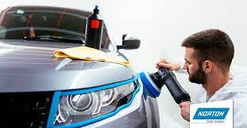
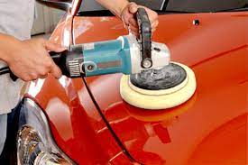
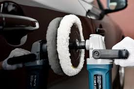
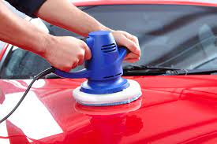
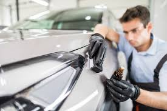
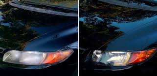
pintura de autos
Pasos para pintar un auto desde cero
Paso 1: Preparado de superficie
Paso 2: Lijado
Paso 3: Enmasillado
Paso 1: PREPARADO DE SUPERFICIE
La limpieza y el desengrasado es el paso imprescindible del proceso de preparación de la superficie a pintar. Esta limpieza elimina todos los residuos y contaminantes que se depositan en la pintura con el paso del tiempo y el uso. Para esta operación necesitaremos agua, desengrasantes y paño gumoso.
Limpiar la superficie con un paño con agua, para eliminar cualquier tipo de suciedad, ya sea polvo, barro, virutas de hierro, etc.
Limpiar nuevamente usando desengrasante, con esto conseguiremos eliminar contaminante adheridos a la pintura y restos de aceites.
Paso 2: LIJADO
Luego de limpiar la superficie, procederemos a lijar las áreas dañadas, para ellos se debe inspeccionar detenidamente todas las piezas a pintar, identificando las áreas que necesiten ser restauradas ( Véase también: Como restaurar pintura automotriz ). Los daños usuales que podemos encontrar en la pintura antigua son abolladuras, arañazos, impactos de objetos, etc.
Por la variedad de daños que podríamos encontrar, resulta conveniente clasificarlos en tres tipos.
Reparaciones de chapa: Si la chapa ha sido reparada, es probable que hayan quedado rastros de pintura descascarillada o desniveles bruscos entre las capas de pintura, es por ello que será necesario usar un grano de lija grueso P80 para decapar la zona, procurando que no existe un desnivel brusco entre la pintura sana y la chapa.
Abolladuras leves: En estos casos, si la pintura no está partida o descascarillada, no es necesario hacer un lijado profundo, solo es necesario lijar la primera capa con lija P180, esto con la finalidad de asegurar la adherencia de la amarilla que se aplicara para nivelar dicha abolladura.
Arañazos e impactos: En estos casos hay que decapar hasta encontrar una capa sana, asegurándose que los transición entre la zona afectada y loa zona en buen estado este suavemente degradada. Se recomienda lija grano P150 – P180.
PASO 3: ENMASILLADO
Luego de lijar las superficies a pintar, procederemos a enmasillar las áreas dañadas. El enmasillado consiste en aplicar masilla poliéster para rellenar las imperfecciones de la chapa. La masilla poliéster Anypsa es una pasta con gran capacidad de relleno, secado rápido y fácil lijado. Para su aplicación es recomendable una espátula acerada.
Desengrasar la superficie antes de masillar para asegurar una mejor adherencia.
Preparación de la masilla: La masilla es un producto bi-componente. Costa de la masilla de poliéster y la crema endurecedor. La reacción química de ambos componentes provoca el secado y endurecimiento de la misma.
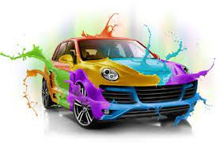
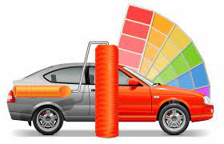
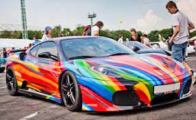
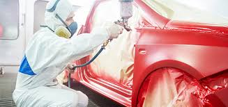
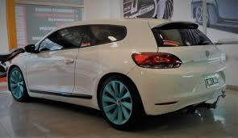
Limpieza de tapizados
En jessandetailing somos especialistas en limpieza de tapizados de automóviles a domicilio.
La limpieza de tapizados de autos es una tarea delicada que requiere de experiencia.
Al igual que en el resto de las superficies del interior del automóvil, la polución, el polvo y los olores se adhieren a las superficies textiles del interior del vehículo.
Las manchas más complicadas como vómitos, sangre, grasas y comida, son muy difíciles de eliminar mediante métodos convencionales.
En jessandetailing utilizamos un sistema de limpieza de tapizados por inyección y extracción que se aplica directamente sobre la mancha accediendo a la última capa de tejido manchado, eliminando la suciedad completamente.
Los productos utilizados para limpiar los tapizados penetran los tejidos, consiguiendo eliminar por completo la suciedad incrustada, desinfectando y desodorizando todas las superficies textiles.
Utilizamos productos ecológicos libres de soda caustica y blanqueadores.
Llevamos nuestros equipos de limpieza de tapizados a domicilio para su comodidad.
Brindamos nuestro servicio a empresas, comercios y particulares.
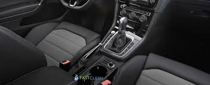
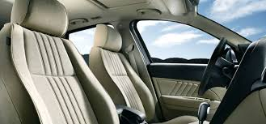
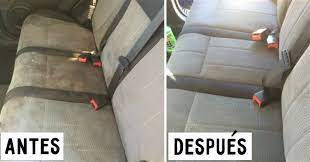
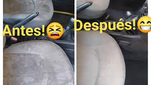
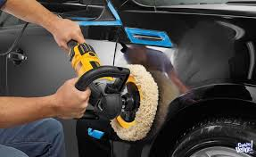
ENCUENTRANOS EN LAS DISTINTAS REDES SOCIALES: